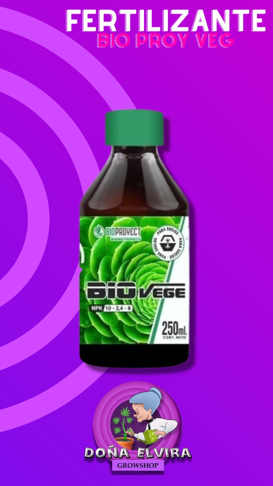
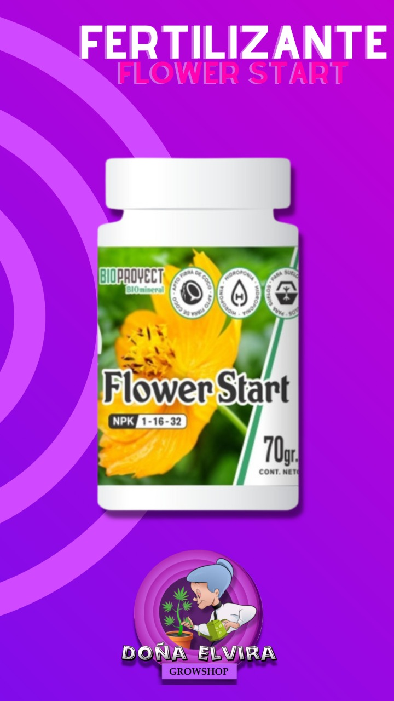
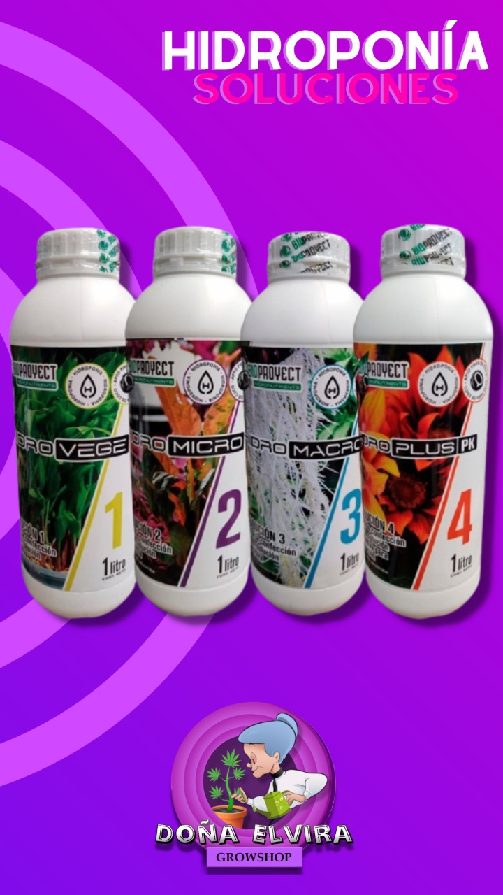

Bioproyect Vegetativo
Estimula el crecimiento de la planta y la producción de ramas y hojas fuertes y sanas. Ayuda a las plantas a superar situaciones de estrés climático. Alta concentración de nutrientes fácilmente asimilables por la planta. Apto para aplicaciones foliares y en riego.
NPK: 10-2,4-6
Bioproyect Flower Start
Flower start es un iniciador de la floración altamente concentrado que aporta niveles ideales de NPK. Conseguirás un arranque de la floración mucho más estimulado. Induce un mejor comienzo de la floración. Acelera la aparición de las primeras flores. Favorece la fotosíntesis. Importante rol en el metabolismo de la planta.


Soluciones para hidroponia
FERTILIZANTES BASE, PARA LA CONFECCIÓN DE LA SOLUCIÓN NUTRITIVA. APORTA NUTRIENTES DE CALIDAD PARA LOGRAR UN CRECIMIENTO ACELERADO Y CONTINUO, CONSIGUIENDO ASÍ PLANTAS SALUDABLES Y RESISTENTES A TODO TIPO DE CONDICIONES ADVERSAS, COMO TAMBIÉN RENDIMIENTOS INCREÍBLES DURANTE LA FLORACIÓN!
COMBO SOLUCIONES 1, 2, 3 Y 4 - 150 ML !